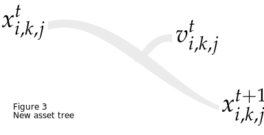

Model
This section provides a shortcut description of the model behind dre4m. For
the purpose of laying out the core concepts, notation has been simplified from
the original paper.
The problem behind the diversification of the technology of a sector can be
summarized by the following linear program,
In which, \(\mathbf{x}\) represents the concatenated vector of variables of the problem, and \(\mathbf{p}\) represents the exogenous parameters of the model, e.g., capital costs, demand, etc. \(\mathcal{X}\) represents the feasible set of constraints of the model, e.g. asset balance, and so forth. Finally, the scalars \(\alpha, \beta, \gamma \in \mathbb{R}_{+}\), are arbitrary scaling factors.
Objective function
The objective function has three main components, viz.,
| Term | Description |
|---|---|
| \(\mathtt{NPV} \left(\mathbf{x}, \mathbf{p}\right)\) | Net present value |
| \(\mathtt{termCost} \left(\mathbf{x}, \mathbf{p}\right)\) | Terminal cost |
| \(\mathtt{softSl}\left(\mathbf{x}, \mathbf{p}\right)\) | Soft service-life cost. |
Net present value, is composed of the overnight capital, O&M, fuel, and retirement costs, adjusted over time. Terminal cost compensates for the myopic results, as a consequence the fixed horizon model. Finally, soft service-life is methodology in which assets penalized for taking part in the system past their typical service-life.
Next is a short description of the core component of the model, but it is noted that this section will not reference to all of the equations and variables found in the model. Refer to the manuscript for more details.
Core: asset balance constraints
The main component of dre4m is the set of variables and constraints that
represent the changes to the technology asset makeup over time.
Any case study for dre4m requires a set of initial assets. Then, for the
specified time horizon, the model within dre4m would find the appropriate set
of retirements, and retrofitting decisions for the existing assets. Moreover,
it can also decide to deploy new capacity from a technology portfolio.
Having establishing the most relevant decisions of the model, the balance terms are contingent upon the following sets, representing time, technology, and initial age, viz.,
| Sets | Description |
|---|---|
| \(T\) | Time set (\(\left\lbrace 0, 1, \dots, \mathtt{horizon}\right\rbrace\)) |
| \(I\) | Technology set (\(\left\lbrace \text{tech 0}, \text{tech 1}, \dots\right\rbrace\)) |
| \(N_j\) | Initial age of existing asset set (\(N_j \subseteq \mathbb{Z}_{\geq 0}\)) |
| \(K_i\) | Sub-technology for existing assets |
| \(\tilde{K}_i\) | Sub-technology for new assets. |
The following variables (\(\in\mathbb{R}_{\geq 0}\)) are thus, recognized,
| variable | description |
|---|---|
| \(w^t_{i,j}\) | existing assets, \(t \in T, i \in I, j \in N_i\) |
| \(y^t_{i,k,j}\) | retrofitted assets transition, \(t \in T, i \in I, k \in K_i, j \in N_i\) |
| \(u^{t}_{i,j}\) | retired assets \(t \in T, i \in I, j \in N_i\) |
| \(z^t_{i,k,j}\) | retrofitted assets, \(t \in T, i \in I, k \in K_i, j \in N_i\) |
| \(\overline{u}^t_{i,k,j}\) | retired retrofitted assets, \(t \in T, i \in I, k \in K_i, j \in N_i\) |
| \(x^{t}_{i,k,j}\) | new assets, \(t,j \in T, i \in I, k \in \tilde{K}_i\) |
| \(v^t_{i,k,j}\) | retired new assets, \(t,j \in T, i \in I, k \in \tilde{K}_i\) |
| \(\tilde{x}^t_{i,k}\) | new allocated, \(t,j \in T, i \in I, k \in \tilde{K}_i\). |
Existing
From a point in time to the next, existing assets can either be retired, undergo a number of retrofits, and remain the same. This corresponds to the decision tree, from the following figure.
This can be interpreted as an algebraic expression as follows,
Existing-retrofitted
If an asset is subject to retrofitting, i.e. at time \(t\), for asset of kind \(i\), and base age \(j\), \(y^t_{i,k,j} > 0\) for some \(k\in K_i\), said asset enters a separate balance for retrofitted-assets. From that point, the retrofitted-asset can either be retired or remain unchanged at the next point. This is shown in the following picture.
Which results in the following algebraic expression,
New-asset
New assets are allocated strategically, i.e. at time \(t\), for kind \(i\), there is \(\tilde{x}^t_{i,k}>0\) for some \(k \in \tilde{K}_i\). Then, these enter their own tally following the next equation,
Moreover, the new assets can either be retired, or continue to the next point, this is laid out in the following figure and equation.

Supporting constraints
Following the supposition of an initial amount of existing assets of different kinds, the variables are linked by the following equation,
Also, it is assumed that no retrofitted-assets exists at the initial time.
Concluding remarks
It is encouraged to refer to the dre4m manuscript where the complete model is
laid out. This page is a brief summary of some core aspects of the model.